Suppose that I toss a fair coin, and offer you Rs 10 for a head,
and demand $Rs 20$ for a tail. In other words, your gain (in Rs)
from this deal is $10$ for head and $-20$ for
tail. Both $10$ and $-20$ are constants, but since you
do not know which of these two constants you are going to get,
you gain is a variable. Since it varies with chance, we call it
a random variable.
Think of this as made of two stages. In the first stage we have a random
experiment with $\Omega = $
{Head, Tail}. In the second stage we have a function
$X:\Omega\rightarrow {\mathbb R}$
defined as
$$\begin{eqnarray*}
X(head) & = & 10,\\
X(tail) & = & -20.
\end{eqnarray*}$$
There is nothing random about this function. The randomness comes
from the mechanism that decides what goes into this: head or tail?
We use this idea to define random variables mathematically. We
start with a random experiment which is the provider of the
randomness. Then any (real valued) function defined on its sample space is
called a random variable. In probability theory, it is the function
(which is not at all random) that is called the random
variable. Thus, if in the above coin toss example, we replace the
fair coin with a biased coin, but keep the payment rules the
same, then we still have the same random variable.
Beginners often find it odd: a random variable is neither random
nor a variable!
However, it is not as unnatural as it sounds. In calculus also we
write $y = x^2$ and say $y$ is a variable as well
as $y$ is a function of $x.$
EXAMPLE 1:
In the coin tossing example with a fair coin, let your gain be
denoted by $X.$ (or sometimes $X(w)$, if you want to emphasize
that it is a function). Find $P(X=10).$
SOLUTION:
The immediate answer is $\frac 12.$ Let's see the steps that led
to this answer. $P(X=10)$ is the probability that $X$
is $10,$ i.e., the probability that the coin toss has
produced an outcome for which the function $X$ takes the
value $10.$ Thus
$$
P(X=10) = P\big\{w\in\{head,tail\}~:~X(w)=10\big\}.
$$
Now $\big\{w\in\{head,tail\}~:~X(w)=10\big\} = \{head\},$ and so
the problem now reduces to finding $P(\{head\}),$ which is $\frac 12.$
■
The general case, then, looks like this: We have a random
experiment with sample space $\Omega.$ A random
variable $X$ is a function $X:\Omega\rightarrow {\mathbb R}$
where ${\mathbb R}$ is any codomain of our choice. If some one gives
us some $A\subseteq {\mathbb R}$ and asks us to find $P(X\in A),$ we
are to actually find
$$
P\big(\big\{w\in\Omega~:~X(w)\in A\big\}\big).
$$
Remember that this is the definition of $P(X\in A).$
The complicated looking set $\big\{w\in\Omega~:~X(w)\in A\big\}$ is
often abbreviated to $\{X\in A\}$ or $X ^{-1} (A).$
Sometimes we need to combine the values of two or more random
variables. Say $X,Y$ are both random variables and we want
to compute $X+Y.$ Since random variables are actually
functions, so this sum can be formed only when $X$
and $Y$ have the same domain. This simple point sometimes
needs careful handling as the following example shows.
EXAMPLE 2:
I am playing against two gamblers simultaneosly. One gambler
tosses a fair coin and pays Rs 10 for a head and takes Rs 20 for a
tail. The other gambler takes Rs 3 from me, rolls a fair die and pays me as many
rupees as the outcome. What is my total gain?
SOLUTION:
If I call the gain
from the first gambler $X,$ then $X$ is a function
from $\{head,tail\}$ to ${\mathbb R},$ while the gain from the
second gambler is a function $Y:\{1,2,3,4,5,6\}\rightarrow{\mathbb R}.$
Obviously, $X+Y$ does not make any sense here. We need to
first combine the two random experiments to get the product
sample space: $\{head,tail\}\times\{1,2,3,4,5,6\}$ and then
consider $X,Y$ both as functions from $\Omega$
to ${\mathbb R}.$ For example, $X(head,4) = 10$
and $Y(head,4) = 4-3 = 1.$
Now it is meaningful to talk about $X+Y.$
■
Is any function of a random variable is again a random
variable? Well, for all practical purposes the answer is "yes". But technically speaking, we have to
avoid the "bad" subsets. This is how we do it.
Let $X:\Omega\rightarrow{\mathbb R}$ be any random variable. Let $f:{\mathbb R}\rightarrow{\mathbb R}$ be any Borel-mesurable function, i.e., if $B\in {\mathcal B}$
then $f^{-1}(B)\in {\mathcal B}.$ Then $f(X)$ is again a random variable. Remember that $f(X)$ actually
means the composition function $(f\circ X):\Omega\rightarrow{\mathbb R}.$
EXAMPLE 3:
A fair die is rolled. I shall pay you Rs 10 if the die shows an
even number, you'll pay me Rs 20 otherwise. Let's denote
by $Y$ your gain (in Rs). Express $Y$ as a function from $\{1,2,3,4,5,6\}$ to ${\mathbb R}.$
Let $A = \{10\}.$ Find $Y ^{-1} (A)$ and using it
find $P(Y\in A).$
SOLUTION:
Here $Y^{-1}(A) = \{2,4,6\}.$ So $P(Y=10) = P(\{2,4,6\}) = \frac 16+\frac 16+\frac 16 = \frac 12.$
■
In each of these examples we had a random variable that
took only two values $10$ and $-20.$ Which random variable do
you think is more profitable for you, $X$ or $Y$? Well, both are actually the
same so far as profit goes. Understand this carefully: $X$ and $Y$
are completely different as functions (their
domains are also different), but in terms of the "behaviour of the
output" of the functions they are identical. This "behaviour of the output" is
called the distribution of the random variable. It is the
distribution which we care about mostly in real applications. So
we often start a discussion as
Let $X$ be a random variable taking values $10$
and $-20$ each with probability $\frac 12.$
We understand implicitly that there is some random experiment (say
the coin toss experiment or the die roll experiment or something
similar) and some function from its sample space
to ${\mathbb R}$ such that the distribution is as
specified. In this
course, we shall often omit the sample space or
the function.
How do we specify the distribution of a random variable? Do we make a list of all the "good" sets, and label them with
their probabilities? That would woul be insane, because there are uncountaly infinitely many "good" sets.
It turns out that specifying the probabilities of intervals like $(-\infty, a]$ is enough.
This is what we discuss next.
EXAMPLE 4: Consider the gambling game that tosses a coin, and has payoffs $-10$ for head, and
$20$ for tail. Let $X$ denote the payoff. What is its CDF?
SOLUTION:
Here $X$ takes only two values $-10$ and 20, each with probability $\frac 12.$
So $F(a) = P(X\leq a) = 0$ whenever $a<-10.$
But $F(-10)=P(X\leq -10) = \frac 12.$ Indeed, as long as $a\in[-10,20)$ we have $F(a) = \frac 12.$
At $a=20,$ we have $F(a) = 1.$ In fact, $\forall a\geq 20~~F(a) = 1.$ So the graph looks like this:
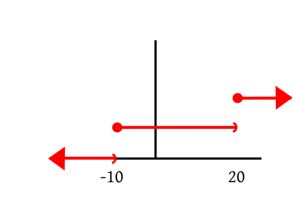
■
The following properties of a CDF are more or less obvious.
Shall show
$$
\forall \epsilon>0 ~~ \exists M \in{\mathbb R} ~~ \forall x < M~~ |F(x)-0| < \epsilon.
$$
(Actually we may drop the absolute value sign around $F(x)$
since it is anyway $\geq 0$).
Take any $\epsilon>0.$
Let $A_n$ be the event that $\{X \leq -n\}$
for $n\in{\mathbb N}.$ Then $F(-n) = P(A_n).$
Clearly, $A_1\supseteq A_2\supseteq A_3\supseteq\cdots$
and $\cap A_n=\phi.$
So $P(A_n)\rightarrow 0,$ i.e., $F(-n)\rightarrow 0.$
So $N\in{\mathbb N} ~~F(-N)<\epsilon.$
Choose $M = -N.$
Take any $x < M.$
Then $0\leq F(x) \leq F(M)<\epsilon,$ since $F(\cdot)$ is nondecreasing.
So $|F(x)-0| < \epsilon,$ as required.
Shall show
$$
\forall \epsilon>0 ~~ \exists M \in{\mathbb R} ~~ \forall x > M~~ |F(x)-1| < \epsilon.
$$
(Actually we may drop the absolute value sign
around $|F(x)-1|$ is $1-F(x)$,
since $F(x)\leq 1,$ anyway.)
Take any $\epsilon>0.$
Let $A_n$ be the event that $\{X \leq n\}$
for $n\in{\mathbb N}.$ Then $P(A_n)=F(n).$
Clearly, $A_1\subseteq A_2\subseteq A_3\subseteq\cdots$
and $\cup A_n=\Omega.$
So $P(A_n)\rightarrow 1,$ i.e., $F(n)\rightarrow1.$
So $N\in{\mathbb N} ~~|F(N)-1|<\epsilon.$
Choose $M = N.$
Take any $x > M.$
Then $0\leq 1-F(x) \leq 1-F(M) <\epsilon,$ since $F(\cdot)$ is nondecreasing.
So $|F(x)-1| < \epsilon,$ as required.
Shall show:
$$
\forall a\in{\mathbb R}~~\forall \epsilon>0~~\exists \delta>0~~ \forall
x\in (a,a+\delta)~~|F(x)-F(a)| < \epsilon.
$$
Take any $a\in{\mathbb R}$ and any $\epsilon>0.$
Let $A_n$ be the event that $\left\{X\leq a+\frac 1n\right\}$ for $n\in{\mathbb N}.$
Also let $A$ be the event that $\{X\leq a\}.$
Then $A_1\supseteq A_2\supseteq\cdots$ and $\cap A_n = A.$
So $P(A_n)\rightarrow P(A)$ and hence $F\left(a+\frac 1n\right)\rightarrow F(a).$
Hence $\exists N\in{\mathbb N} ~~ |F\left(a+\frac 1N\right)-F(a)|<\epsilon.$
Choose $\delta = \frac 1N>0.$
Take any $x\in (a,a+\delta).$
Since $F(\cdot)$ is nondecreasing, hence $F(a)\leq F(x)
\leq F(a+\delta) < F(a)+ \epsilon.$
So $|F(a+x)-F(a)|<\epsilon,$ as required.
[QED]
A rather nontrivial theorem is that the converse is also
true. This converse is called the fundamental theorem of
probability.
Proof:Too technical for this course.[QED]
Proof:
Let $F:{\mathbb R}\rightarrow{\mathbb R}$ be nondecreasing and bounded from above.
Take any $a\in {\mathbb R}.$
We shall show that $\lim_{x\rightarrow a-} F(x)$ exists as a finite
number, i.e.,
$$
\exists\ell\in{\mathbb R}~~\forall \epsilon>0~~\exists \delta>0~~\forall x\in(a-\delta,a)~~|F(x)-\ell|\leq\epsilon.
$$
Consider the set $A=\{F(x)~:~x < a\}.$ Then $A\neq\phi$
and bounded from above (by $F(a)$).
So $\sup(A)\in{\mathbb R}.$
Choose $\ell = \sup(A).$
Take any $\epsilon>0.$
Then $\exists y < a~~F(y) > \ell-\epsilon.$
Choose $\delta = a-y > 0.$
Take any $x\in(a-\delta,a) = (y,a).$
Then $F(y)\leq F(x) \leq \ell,$ or, in other words, $\ell-\epsilon\leq F(x)\leq \ell.$
So $|F(x)-\ell|\leq \epsilon,$ as required.
[QED]
Proof:
Take any $a\in{\mathbb R}.$
Let $A = \{X < a\}$ and let $A_n
= \left\{X \leq a-\frac 1n\right\}$ for $n\in{\mathbb N}.$
Then $A_n\nearrow A.$
Hence $P(A_n)\rightarrow P(A).$
So $F\left(a-\frac 1n\right)\rightarrow P(A).$
But $F\left(a-\frac 1n\right)\rightarrow F(a-),$ since $F(a-)$ exists.
Hence $P(X < a) = F(a-),$ as required.
[QED]
Depending on the distribution, a random variable may be of 3
types:
Discrete: These random variables take only countably
many (finite/infinitely many) values.
Continuous: If a random variable takes values in some
set $S$ such that $\forall a\in S~~P(X=a)=0,$ then we
call it a continuous random variable. Notice that
a continuous
random variable is not defined as a random variable that takes a
"continuous stretch of values". However, most continuous random
variables in practice do indeed take all values in an interval, e.g., height
of a randomly selected person.
Neither discrete nor continuous: These take
uncountably many values and for at least one value $a$ we
have $P(X=a)>0.$
The following theorem justifies the adjective "continuous" for a
random variable.
Proof:
Obvious from the last theorem.
[QED]
In this course we shall focus on discrete random variables only.
The distribution of a discrete random variable is completely
specified by the countable set of values it can take, and the
probability with which it takes each of those values. These two
specifications together are called the probability mass
function (PMF) of the rv.
Clearly, $\sum p_i = 1$ and $\forall i~~p_i\geq 0.$ A
consequence of the fundamental theorem of probability is that for
any countable set $\{x_1,x_2,...\}$ and for any
sequence $(p_i)_i,$ for which $\forall i~~p_i\geq 0$
and $\sum p_i=1,$ there is a (discrete) random variable of
which the PMF is $p(x)$ given above.
The CDF of a discrete random variable is a step function like the one we saw in our example.
$P(X=1) = P(X\leq 1)-P(X< 1).$
Now $\{X < 1\} = \lim_n \left\{X\leq 1-\frac 1n\right\}.$ Since this is an increasing limit, hence by continuity of
probability, we have $P(X<1) = \lim_n P\left(X\leq 1-\frac 1n\right) = \lim_n F\left(1-\frac 1n\right) = F(1-).$
Hence $P(X=1) = F(1)-F(1-).$
::
EXERCISE 5:
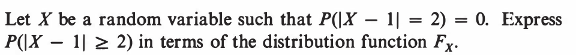
In all the following problems the term "density" stands for "PMF".
::
EXERCISE 6:
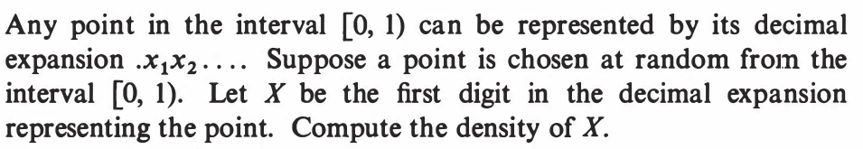
::
EXERCISE 7:
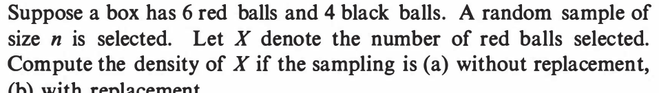
::
EXERCISE 8:
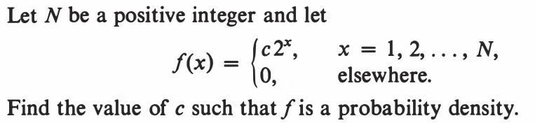
::
EXERCISE 9:
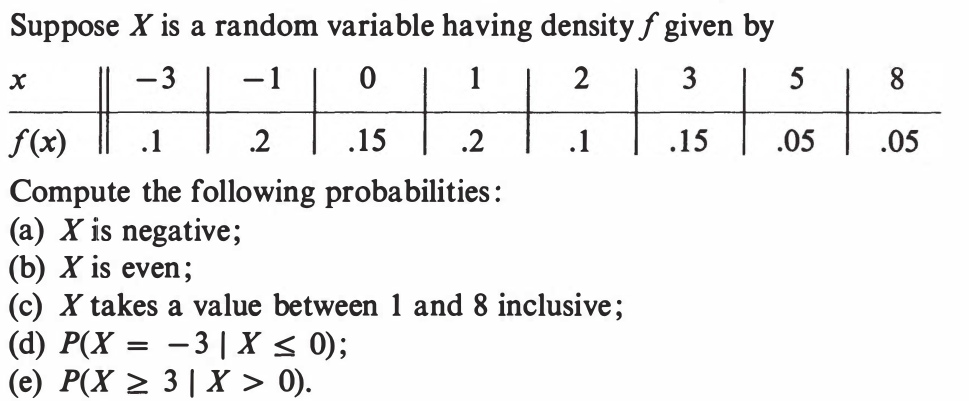
::
EXERCISE 10:
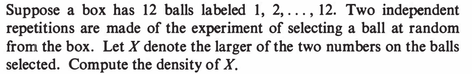
::
EXERCISE 11:
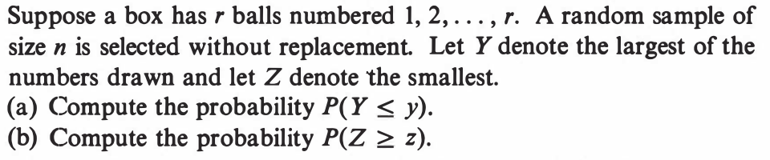
The nex two problems refer to the following CDF:
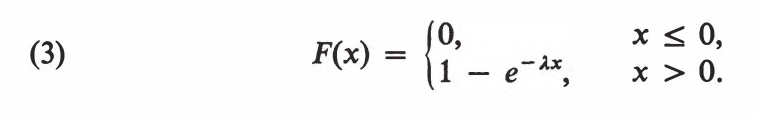
::
EXERCISE 12:
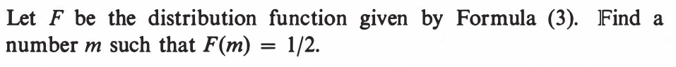
::
EXERCISE 13:
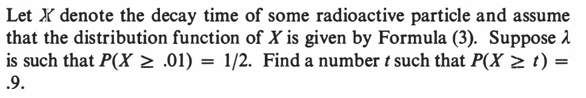
::
EXERCISE 14:
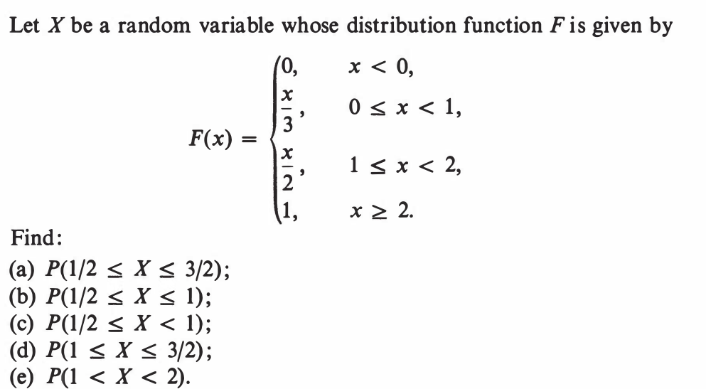
::
EXERCISE 15:
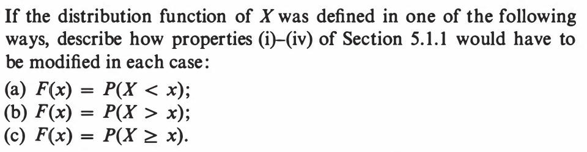
Here are the properties (i)-(iv) from section 5.1.1: